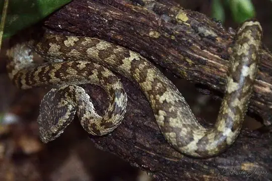
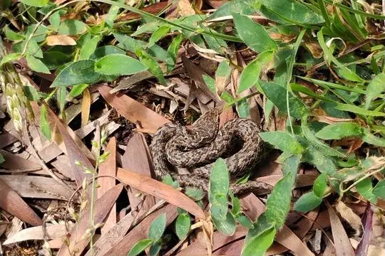
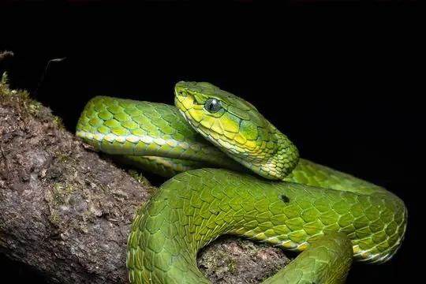
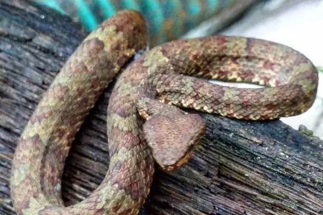
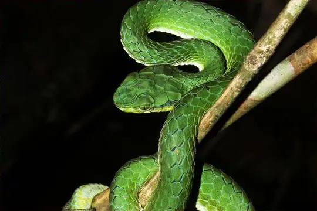
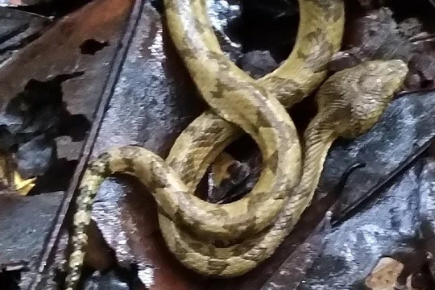
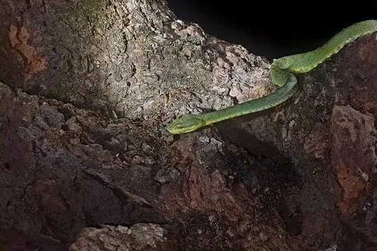

Craspedocephalus
The genus Craspedocephalus (family Viperidae) has 15 living species in SnakeList (all venomous), recorded in 9 countries.
- 15living species
- 15venomous
- 9countries
About the genus
A genus of the family Viperidae (vipers and pit vipers).
Species
Showing 15 species

Anamala Pit ViperCraspedocephalus anamallensis Ashy Pit-viperCraspedocephalus puniceus
Ashy Pit-viperCraspedocephalus puniceus Borneo Pit ViperCraspedocephalus borneensis
Borneo Pit ViperCraspedocephalus borneensis Brongersma's Pit ViperCraspedocephalus brongersmai
Brongersma's Pit ViperCraspedocephalus brongersmai Ceylon Pit ViperCraspedocephalus trigonocephalus
Ceylon Pit ViperCraspedocephalus trigonocephalus Common Bamboo ViperCraspedocephalus gramineus
Common Bamboo ViperCraspedocephalus gramineus
Horseshoe Pit-viperCraspedocephalus strigatus
Large-scaled Pit ViperCraspedocephalus macrolepis
Malabar Pit ViperCraspedocephalus malabaricus Palm Vit ViperCraspedocephalus wiroti
Palm Vit ViperCraspedocephalus wiroti
Southern Large-scaled Pit ViperCraspedocephalus peltopelor Sumatran Palm Pit ViperCraspedocephalus andalasensis
Sumatran Palm Pit ViperCraspedocephalus andalasensis
Travancore Pit ViperCraspedocephalus travancoricus
Western Bamboo Pit ViperCraspedocephalus occidentalis- No photo yetCraspedocephalus rubeus
No snakes in Craspedocephalus match.
About the genus Craspedocephalus
Compare its species
Its living species side by side. Lengths come only from SnakeList’s reviewed, sourced accounts; the others are left blank rather than guessed.
| Species | Venom | Recorded in | Adult length (reviewed accounts) |
|---|---|---|---|
| Anamala Pit Viper Craspedocephalus anamallensis | Venomous | 1 country (Asia) | No reviewed account yet |
| Ashy Pit-viper Craspedocephalus puniceus | Venomous | 2 countries (Asia) | No reviewed account yet |
| Borneo Pit Viper Craspedocephalus borneensis | Venomous | 3 countries (Asia) | No reviewed account yet |
| Brongersma's Pit Viper Craspedocephalus brongersmai | Venomous | 1 country (Asia) | No reviewed account yet |
| Ceylon Pit Viper Craspedocephalus trigonocephalus | Venomous | 1 country (Asia) | No reviewed account yet |
| Common Bamboo Viper Craspedocephalus gramineus | Venomous | 7 countries (Asia) | No reviewed account yet |
| Horseshoe Pit-viper Craspedocephalus strigatus | Venomous | 1 country (Asia) | No reviewed account yet |
| Large-scaled Pit Viper Craspedocephalus macrolepis | Venomous | 1 country (Asia) | No reviewed account yet |
| Malabar Pit Viper Craspedocephalus malabaricus | Venomous | 1 country (Asia) | No reviewed account yet |
| Palm Vit Viper Craspedocephalus wiroti | Venomous | 2 countries (Asia) | No reviewed account yet |
| Southern Large-scaled Pit Viper Craspedocephalus peltopelor | Venomous | 1 country (Asia) | No reviewed account yet |
| Sumatran Palm Pit Viper Craspedocephalus andalasensis | Venomous | 1 country (Asia) | No reviewed account yet |
| Travancore Pit Viper Craspedocephalus travancoricus | Venomous | 1 country (Asia) | No reviewed account yet |
| Western Bamboo Pit Viper Craspedocephalus occidentalis | Venomous | 1 country (Asia) | No reviewed account yet |
| Craspedocephalus rubeus | Venomous | 2 countries (Asia) | No reviewed account yet |